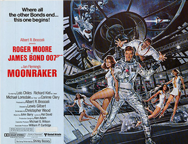
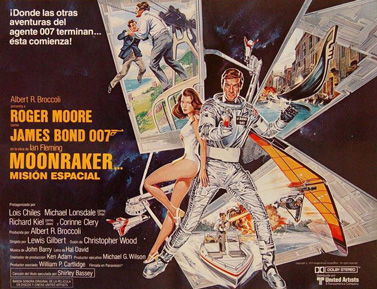
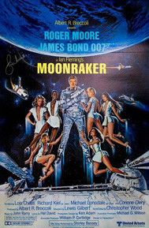
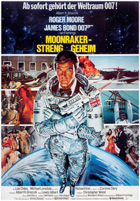
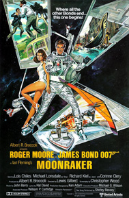

Christopher Wood
Les Productions Artistes Associés
Shirley Bassey
A Drax Industries Moonraker space shuttle on loan to the United Kingdom is hijacked in mid-air. M, head of MI6, assigns James Bond, to investigate. En route to England, Bond is attacked and pushed out of the plane by the mercenary assassin Jaws. He survives by stealing a parachute from the pilot, whilst Jaws lands on a trapeze net within a circus tent.
At the Drax Industries shuttle-manufacturing complex in California, Bond meets the owner of the company, Hugo Drax, and his henchman Chang. Bond also meets Dr. Holly Goodhead, an astronaut, and he then survives an assassination attempt while inside a centrifuge chamber. Drax's personal pilot, Corinne Dufour, helps Bond find blueprints for a glass vial made in Venice; Drax discovers her involvement and has her killed.
Bond again encounters Goodhead in Venice where he is chased through the canals by Drax's henchmen. He discovers a secret biological laboratory, and learns that the glass vials are to hold a nerve gas deadly to humans, but harmless to animals. Chang attacks Bond and is killed; during the fight, Bond finds evidence that Drax is moving his operation to Rio de Janeiro. Rejoining Goodhead, he deduces that she is a CIA agent spying on Drax. Bond has saved one of the vials he found earlier, as the only evidence of the now-empty laboratory; he gives it to M for analysis, who permits him to go to Rio de Janeiro under the pretence of being on leave.
Bond survives attacks by Jaws, Chang's replacement, during Rio Carnival and on the Sugarloaf Cable Car. After Jaws' cable car crashes, he is rescued from the rubble by Dolly, and the two fall in love. Drax's forces capture Goodhead, but Bond escapes; he learns that the toxin comes from a rare orchid indigenous to the Amazon jungle. Bond travels the Amazon River and comes under attack from Drax's forces, before eventually locating his base. Captured by Jaws, Bond is taken to Drax and witnesses four Moonrakers lifting off. Drax explains that he stole the lent shuttle because another in his fleet had developed a fault during assembly. Bond and Goodhead escape and pose as pilots on Moonraker 6. The shuttles dock with Drax's space station, hidden from radar by a cloaking device.
Bond and Goodhead disable the radar jamming cloaking device; the United States sends a platoon of Marines aboard another shuttle to intercept the now-visible space station. Jaws captures Bond and Goodhead, to whom Drax reveals his plan to destroy human life by launching 50 globes that would dispense the nerve gas into Earth's atmosphere. Drax had transported several dozen genetically perfect young men and women of varying races to the space station in the shuttles. They would live there until Earth was safe again for human life; their descendants would be the seed for a "new master race". Bond persuades Jaws to switch his allegiance by getting Drax to admit that anyone not measuring up to his physical standards, including Dolly, would be exterminated. Jaws attacks Drax's guards, and a laser battle ensues between Drax's forces and Bond, Jaws, and the Marines. Drax's forces are defeated as the station is destroyed, while Bond ejects Drax into space. Bond and Goodhead use a laser-armed Moonraker to destroy the three launched globes and return to Earth.
Initially, the chief villain, Hugo Drax, was to be played by British actor James Mason but, once the decision was made that the film would be an Anglo-French co-production under the 1965–79 film treaty, French actor Michael Lonsdale was cast as Drax and Corinne Cléry was chosen for the part of Corinne Dufour, to comply with qualifying criteria of the agreement. Stewart Granger and Louis Jourdan were considered also for the role of Drax. Jourdan later portrayed prince Kamal Khan, chief villain of Octopussy. American actress Lois Chiles had originally been offered the role of Anya Amasova in The Spy Who Loved Me (1977), but had turned down the part when she decided to take temporary retirement. Chiles was cast as Holly Goodhead by chance, when she was given the seat next to Lewis Gilbert on a flight and he believed she would be ideal for the role as the CIA scientist. Drax's henchman Chang, played by Japanese aikido instructor Toshiro Suga, was recommended for the role by executive producer Michael G. Wilson, who was one of his pupils. Wilson, continuing a tradition he started in the film Goldfinger, has a small cameo role in Moonraker: he appears twice, first as a tourist outside the Venini Glass shop and museum in Venice, then at the end of the film as a technician in the US Navy control room.
The Jaws character, played by Richard Kiel, makes a return, although in Moonraker the role is played more for comedic effect than in The Spy Who Loved Me. Jaws was intended to be a villain against Bond to the bitter end, but director Lewis Gilbert stated on the DVD documentary that he received so much fan mail from small children saying "Why can't Jaws be a goodie not a baddie", that as a result he was persuaded to make Jaws gradually become Bond's ally at the end of the film.
Diminutive French actress Blanche Ravalec, who had recently begun her career with minor roles in French films such as Michel Lang's Holiday Hotel (1978) and Claude Sautet's Academy Award for Best Foreign Language Film nominee, A Simple Story (1978), was cast as the bespectacled Dolly, the girlfriend of Jaws. Originally, the producers were dubious about whether the audience would accept the height difference between them, and only made their decision once they were informed by Richard Kiel that his real-life wife was of the same height. Lois Maxwell's 22-year-old daughter, Melinda Maxwell, was also cast as one of the "perfect" human specimens from Drax's master race.
The end credits for the previous Bond film, The Spy Who Loved Me, said, "James Bond will return in For Your Eyes Only"; however, the producers chose the novel Moonraker as the basis for the next film, following the box office success of the 1977 space-themed film Star Wars. For Your Eyes Only was subsequently delayed and ended up following Moonraker in 1981.
Moonraker was intended by its creator Ian Fleming to become a film even before he completed the novel in 1954, since he based it on a screenplay manuscript he had written even earlier. Budgetary issues caused the film to be primarily shot in France, with locations also in Italy, Brazil, Guatemala and the United States. The soundstages of Pinewood Studios in England, traditionally used for the series, were only used by the special effects team. Moonraker was noted for its high production cost of $34 million, more than twice as much money as predecessor The Spy Who Loved Me, and it received mixed reviews. However, the film's visuals were praised with Derek Meddings being nominated for the Academy Award for Best Visual Effects, and it eventually became the highest-grossing film of the series with $210,300,000 worldwide, a record that stood until 1995's GoldenEye..
Frank Sinatra, Johnny Mathis and Kate Bush had all declined the invitation to sing the title song, so John Barry offered the song to Shirley Bassey within just weeks of the film's release date. As a result, Bassey made the recordings with very short notice and never regarded the song 'as her own' as she had never had the chance to perform it or promote it first.
Production began on 14 August 1978. The main shooting was switched from the usual 007 Stage at the Pinewood Studios to France, due to high taxation in England at the time. Only the cable car interiors and space battle exteriors were filmed at Pinewood. The massive sets designed by Ken Adam were the largest ever constructed in France and required more than 222,000 man-hours to construct (roughly 1,000 hours by each of the crew on average). They were shot at three of France's largest film studios in Épinay and Boulogne-Billancourt. The 220 technicians used 100 tonnes of metal, two tonnes of nails and 10,000 board feet of wood to build the three-story space station set at Épinay Studios. The elaborate space set for Moonraker holds the world record for having the largest number of zero gravity wires in one scene. The Venetian glass museum and fight between Bond and Chang was shot at Boulogne Studios in a building which had once been a World War II Luftwaffe aircraft factory during Germany's occupation of France. The scene in the Venice glass museum and warehouse holds the record for the largest amount of break-away sugar glass used in a single scene.
Drax's mansion, set in California, was actually filmed at the Château de Vaux-le-Vicomte, about 55 kilometres (34 miles) southeast of Paris, for the exteriors and Grand Salon. The remaining interiors, including some of the scenes with Corinne Defour and the drawing room, were filmed at the Château de Guermantes.
Much of the film was shot in the cities of London, Paris, Venice, Palmdale, California, Port St. Lucie, Florida, and Rio de Janeiro. The production team had considered India and Nepal as a location in the film but on arriving at those places to investigate, they found that to write them into the script was inconceivable, particularly with time restrictions to do so. They decided on Rio de Janeiro, Brazil, relatively early on, a city that Albert Broccoli had visited on holiday, and a team was sent to that city in early 1978 to capture initial footage from the Carnival festival, which featured in the film.
At the Rio de Janeiro location, many months later, Roger Moore arrived several days later than scheduled for shooting due to recurrent health problems and an attack of kidney stones that he had suffered while in France. After arriving in Rio de Janeiro, Moore was immediately whisked off the plane and went straight to hair and make-up work, before reboarding the plane, to film the sequence with him arriving as James Bond in the film. Sugarloaf Mountain was a prominent location in the film, and during filming of the cable car sequence in which Bond and Goodhead are attacked by Jaws during mid-air transportation high above Rio de Janeiro, the stuntman Richard Graydon slipped and narrowly avoided falling to his death. For the scene in which Jaws bites into the steel tramway cable with his teeth, the cable was actually made of liquorice, although Richard Kiel was still required to use his steel dentures.
Iguazu Falls was a natural location depicted in the film, although as stated by Q in the film, the falls were intended to be located somewhere in the upper basin of the Amazon River rather than where the falls are actually located in the south of Brazil. The second unit had originally planned on sending an actual boat over the falls. However, on attempting to release it, the boat became firmly embedded on rocks near the edge. Despite a dangerous attempt by helicopter and rope ladder to retrieve it, the plan had to be abandoned, forcing the second unit to use a miniature at Pinewood instead. The exterior of Drax's pyramid headquarters in the Amazon rain forest near the falls was actually filmed at the Tikal Mayan ruins in Guatemala. The interior of the pyramid, however, was designed by Ken Adam at a French studio, in which he purposefully used a shiny coating to make the walls look plastic and false. All of the space centre scenes were shot at the Vehicle Assembly Building of the Kennedy Space Centre, Florida, although some of the earlier scenes of the Moonraker assembly plant had been filmed on location at the Rockwell International manufacturing plant in Palmdale, California.
The early scene involving Bond and Jaws in which Bond is pushed out of the aircraft without a parachute took weeks of planning and preparation. The skydiving sequence was coordinated by Don Calvedt under the supervision of second unit director John Glen and was shot above Lake Berryessa in northern California. As Calvedt and skydiving champion B.J. Worth developed the equipment for the scene, which included a 1-inch-thick (25 mm) parachute pack that could be concealed beneath the suit to give the impression of the missing parachute, and equipment to prevent the freefalling cameraman from suffering whiplash while opening his parachute, they brought in stuntman Jake Lombard to test it all. Lombard eventually played Bond in the scene, with Worth as the pilot from whom Bond takes a parachute, and Ron Luginbill as Jaws. Both Lombard and Worth became regular members of the stunt team for aerial sequences in later Bond films. When the stuntmen opened their parachutes at the end of every shoot, custom-sewn velcro costume seams separated to allow the hidden parachutes to open. The skydiver cinematographer used a lightweight Panavision experimental plastic anamorphic lens, bought from an old pawn shop in Paris, which he had adapted, and attached to his helmet to shoot the entire sequence. The scene took a total of 88 skydives by the stuntmen to be completed. The only scenes shot in studio were close-ups of Roger Moore and Richard Kiel.
Since NASA's Space Shuttle program had not been launched, Derek Meddings and his miniatures team had to create the rocket launch footage without any reference. Shuttle models attached to bottle rockets and signal flares were used for take-off, and the smoke trail was created with salt that fell from the models. The space scenes were done by rewinding the camera after an element was shot, enabling other elements to be superimposed in the film stock, with the space battle needing up to forty rewinds to incorporate everything.
For the scene involving the opening of the musical electronic laboratory door lock in Venice, producer Albert Broccoli requested special permission from director Steven Spielberg to use the five-note melody from his film Close Encounters of the Third Kind (1977). In 1985, Broccoli returned the favour by fulfilling Spielberg's request to use the James Bond theme music for a scene in his film, The Goonies (1985).
As James Bond is arriving at the scene of the pheasant shoot, a trumpet is sounded playing the first three brass notes from Also sprach Zarathustra, referencing the film 2001: A Space Odyssey (1968).




